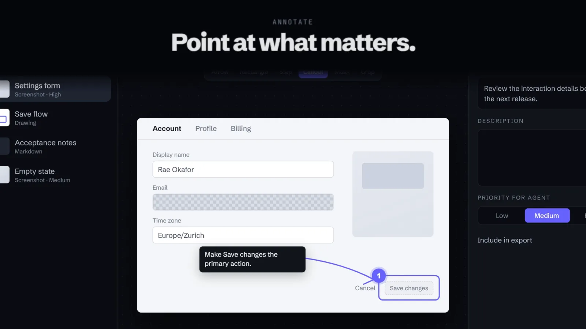
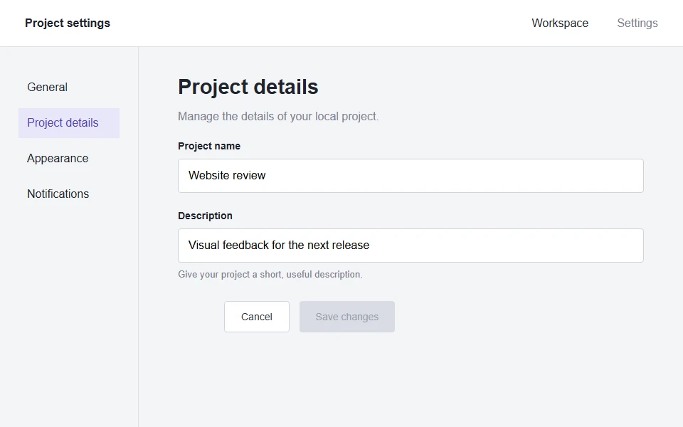
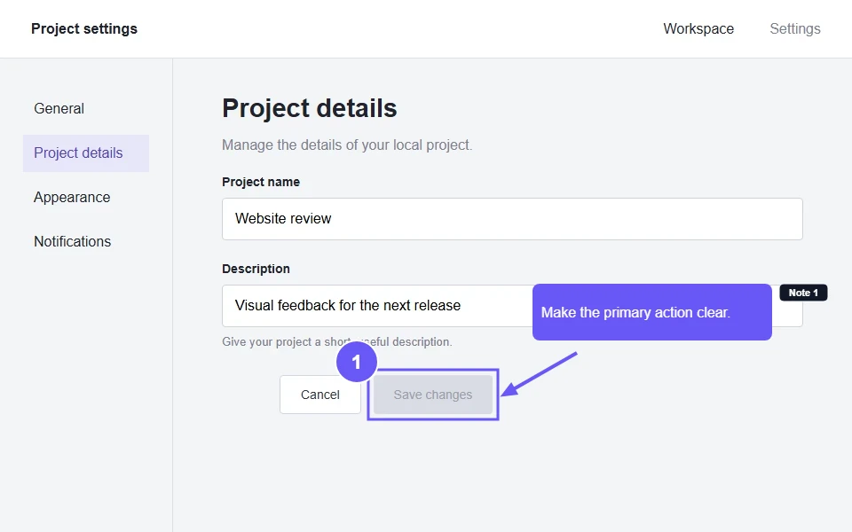
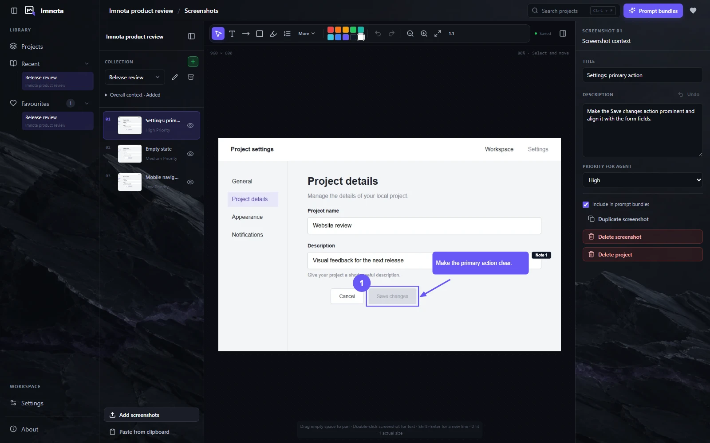
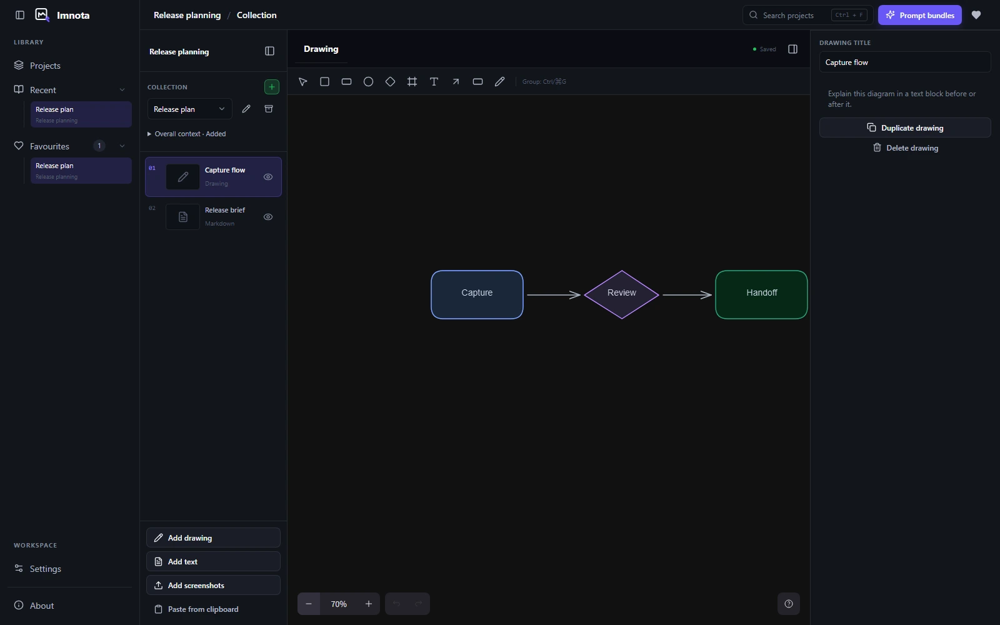
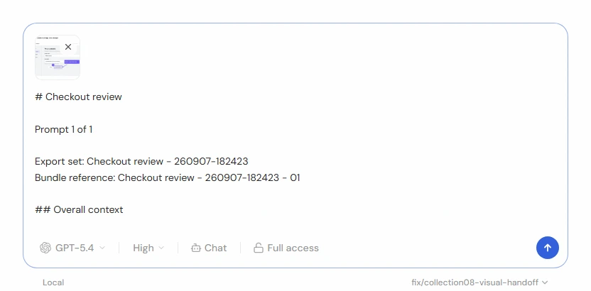

Local-first
desktop app. Open source. No account required.

A product film made from Imnota’s real workflow and example content.
Give the picture a point.
A screenshot shows the symptom. Your agent still needs to know what
matters, what is wrong and what should change.
Just the screenshot Where should I look?

???
The screen is visible. The intention is missing.
With Imnota Here. This. Because.

1 Make Save changes the
primary action. Align it with the fields.
From seeing it to explaining it.
Four steps. One clear handoff.
01
Collect
Paste, drop or import screenshots, or capture an area, window or
whole screen. Add standalone drawings and Markdown notes to the
same collection.
PNGJPEGWebPCapture

02
Mark
Arrows, boxes, highlights, text, callouts, numbered steps and
sensitive-area masks. Crop without touching the original.
ArrowStepMaskUndo
03
Describe
Add collection context, a description for each screenshot or
drawing and an agent priority. Sketch flows when words are not
enough.
ContextPriority: HighDrawings

04
Copy
One click prepares timestamped Markdown and high-resolution
PNGs. Paste them into the coding tool you already use, or let a
local agent read them.
.md.pngRich copy

New in stable 0.3.0
From any screen. Straight to your agent.
The biggest Imnota update yet. Capture from anywhere, give your
agent marks it can actually read, and optionally let it load your
bundles without a paste.
A global shortcut, the tray or menu-bar icon, or the toolbar. Drag
across screens, add a 3 or 5 second delay, repeat the last area,
then save, annotate or copy from the capture overlay.
CtrlShift5
Readable marks
Every mark, in words.
Prompt Markdown lists arrows, boxes and steps as positions, with
the screenshot's source size.
### Picture 1 / Marks
- arrow `a1` to 75.9%,83.0%
- rectangle `r1` 19.4%×12.5%
- step `s1` number 1
On-device OCR
The text on screen, too.
Optional text recognition adds a visible-text section. It runs on
your device and skips blurred or pixelated screenshots.
Local agent access
No paste. Your agent reads the bundle.
Turn it on in Settings and any MCP-capable coding agent on the
same computer can list projects and load your latest prepared
bundle. Off by default. Listens only on 127.0.0.1.
Also new: a reworked Settings, simpler navigation, repeat copies that
reuse finished bundles and stronger recovery safeguards.
See all changes and compatibility notes ↗
The film
The whole handoff in one minute.
Collect, annotate, draw, describe and copy, then hand the bundle
to a coding agent. 63 seconds with an original soundtrack.
The exported PNG keeps the annotations visible. Its Markdown
companion carries the collection context, descriptions,
priorities, callout notes and now the marks themselves.
No Node.js, pnpm, Electron or development dependencies needed.
Manual build
Clone
the source repository
and open its folder in your terminal. Use Node.js 22.13+ and
Corepack, then run the packaging command for your operating
system.
From the Imnota source folder
corepack enable
corepack pnpm install
corepack pnpm package:win # Windows
corepack pnpm package:mac # macOS
corepack pnpm package:linux # Linux
The last three lines are alternatives. Run only the target you
need.
A note for macOS. The current release is not
Apple-notarised. If macOS blocks it, follow the
README opening guidance.
</>
MIT licensed. Yours to inspect.
Built in the open, designed for real workflows.
An open-source screenshot annotation tool built with Electron, React
and TypeScript. Desktop targets for Windows, macOS and Linux. Read
the code, build it yourself or contribute a focused improvement.
Local editing, capture, copy and export use files on your machine.
Optional Share online uploads only the finalized PNG and Markdown
bundle you review and approve, not your editable project folder.
Anyone with the link can open it until it expires or you revoke
it.
Do I need an AI account to use it?
No. Imnota has no account requirement and no built-in AI provider
connection. It prepares context for the assistant or coding agent
you already use.
How does local agent access work?
It is off by default. When you turn it on in Settings, Imnota
listens only on 127.0.0.1 so an MCP-capable coding agent on the
same computer can list projects, read collection items and load
the latest bundle you prepared. Agents cannot create exports for
you. See
the agent guide.
Which operating systems are supported?
Windows, macOS 13 or later, and Linux. Screen capture works on
Windows and macOS; on Linux, import or paste screenshots. Check
the latest release
for available desktop downloads.
What does the export contain?
A fresh, timestamped export in collection order, with Markdown and
high-resolution PNGs for visual items. Text-only collections
export Markdown without placeholder images. The Markdown includes
collection context, screenshot and drawing descriptions, agent
priorities, text or callout notes, annotation marks as positions
and the source size of each screenshot. Optional on-device text
recognition adds visible text. Large collections may split
automatically.
The current release is not Apple-notarised. The README explains
how to open it through System Settings, Privacy & Security,
Open Anyway. Read the
macOS installation guidance. Do not disable Gatekeeper.